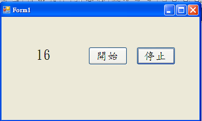
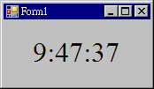
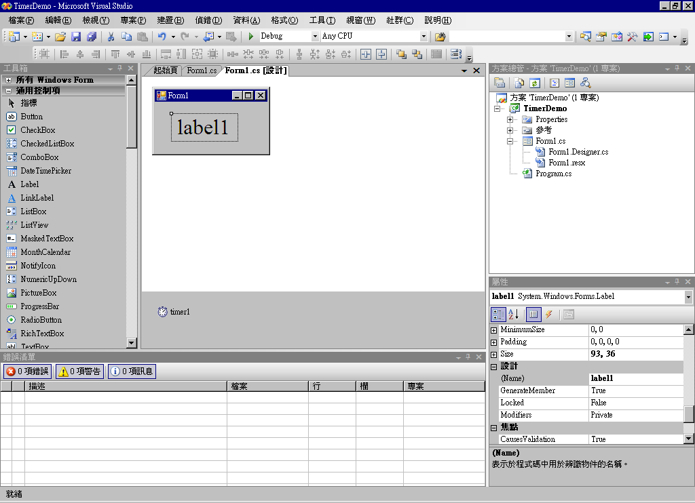

C# 視窗程式：時間驅動
碼表
教學錄影：C# Timer 與碼錶 -- http://youtu.be/UA0rizekLow
專案下載：
- https://dl.dropbox.com/u/101584453/cs/code/TimerDemo.zip
- https://dl.dropbox.com/u/101584453/cs/code/TimerClock.zip

碼表畫面
using System;
using System.Collections.Generic;
using System.ComponentModel;
using System.Data;
using System.Drawing;
using System.Linq;
using System.Text;
using System.Windows.Forms;
namespace WindowsFormsApplication1
{
public partial class Form1 : Form
{
int counter = 0;
public Form1()
{
InitializeComponent();
}
private void timer_Tick(object sender, EventArgs e)
{
counter++;
labelTimer.Text = ""+counter;
}
private void buttonStart_Click(object sender, EventArgs e)
{
timer.Enabled = true;
}
private void buttonStop_Click(object sender, EventArgs e)
{
timer.Enabled = false;
}
}
}小時鐘
教學錄影：C# Timer 與小時鐘 -- http://youtu.be/NJ6B5-vO_88
專案下載：https://dl.dropbox.com/u/101584453/cs/code/Clock.zip
執行畫面：

小時鐘
介面設計
請從工具箱中拉出一個 label 與一個 Timer，如下圖所示。

小時鐘介面設計
using System;
using System.Collections.Generic;
using System.ComponentModel;
using System.Data;
using System.Drawing;
using System.Text;
using System.Windows.Forms;
namespace TimerDemo
{
public partial class Form1 : Form
{
public Form1()
{
InitializeComponent();
timer1_Tick(this, null);
timer1.Interval = 1000; // 設定每秒觸發一次
timer1.Enabled = true; // 啟動 Timer
}
private void timer1_Tick(object sender, EventArgs e)
{
DateTime time = DateTime.Now;
// label1.Text = time.TimeOfDay.ToString();
// label1.Text = time.Hour + ":" + time.Minute + ":" + time.Second;
label1.Text = String.Format("{0:00}:{1:00}:{2:00}",
time.Hour, time.Minute, time.Second);
}
}
}用 Timer 控制動畫
教學錄影：C# Timer 與移動球 -- http://youtu.be/6Gs4MPzt6q4